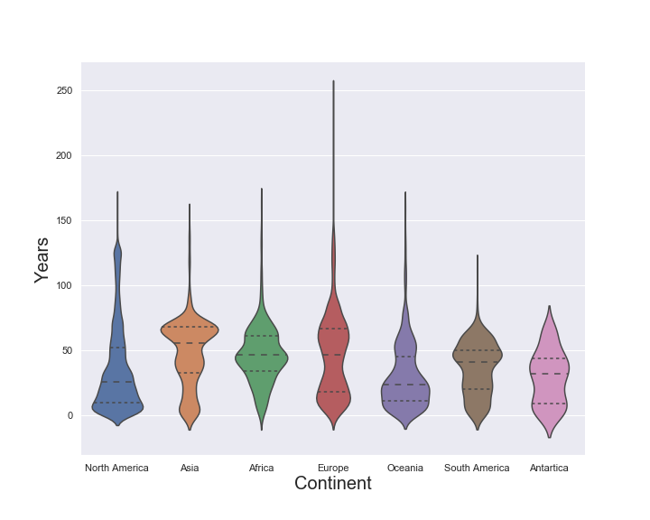
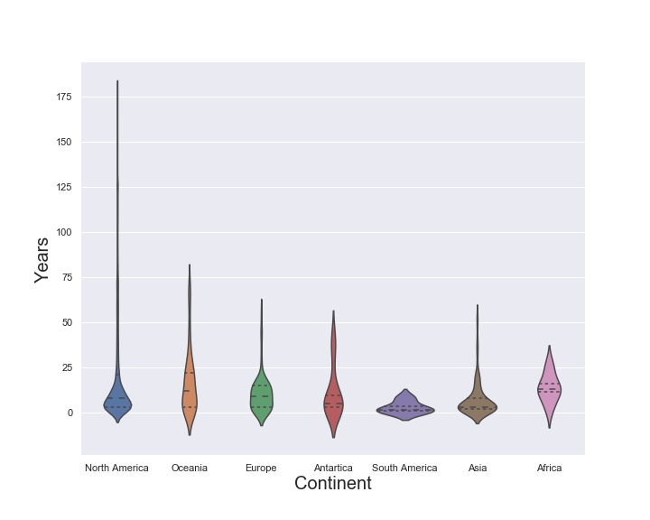
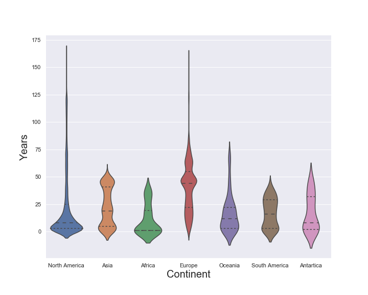

Years of Observations
Violin plots display the distribution of years of data for the stations in the archive. For example, the first plot gives the distributions of years of data for stations reporting daily precipition for the different continents.
Daily Precipitation

Daily Minimum Temperature
Daily Snowfall
Daily Snow Depth
Note that the sizes of the violin plots do not scale to the number of observations within each continent.
Spread of the Distributions
We see that many of the distributions are skewed to the right. In the case of precipitation, minimum temperature, and maximum temperature, the third quartile is below 75 years for each of the continents. With the exception of Antartica, each of the continents has stations with data spanning more than 100 years of observations. For daily snowfall, the third quartile falls below 25 years for each of the continents. The third quartile for daily snow depth is below 55 years for all continents.
For precipitation, there is a station in Europe with 239 years of data, in North America there is a station with 180 years of data and in Oceania there is a station with 181 years of data. For minimum and maximum daily temperature, there is a station in Europe with 246 years of data; in North America there is a station with 164 years of data, and in Oceania there is a station with 161 years of data. For daily snowfall, there is station in North America with 178 years of observations. Finally, for daily snow depth, there is a station in North America with 163 years of data and a station in Europe with 157 years of data.
Central Locations of the Distributions
Summary statistics for the years of data distribution are given in Data Summaries. This includes measures of the median number of years of observations and the average number of years of observations. We see that the median number years of observations tends to be smaller in North America with some minor exceptions. This is due to the recent, rapid growth of the number of stations in North America included in the GHCN Archive.
The table below gives the median number of years for each type of observation by continent.
| Element | Africa | Antartica | Asia | Europe | North America | Oceania | South America |
|---|---|---|---|---|---|---|---|
| PRCP | 67 | 26 | 56 | 50 | 10 | 37 | 26 |
| TMAX | 46 | 33 | 55 | 47 | 25 | 24 | 39 |
| TMIN | 47 | 32 | 56 | 47 | 26 | 24 | 41 |
| SNOW | 13 | 5 | 3 | 9 | 8 | 12 | 2 |
| SNWD | 1 | 8 | 19 | 44 | 8 | 12 | 16 |
Menne, M.J., I. Durre, R.S. Vose, B.E. Gleason, and T.G. Houston, 2012: *An overview of the Global Historical Climatology Network-Daily Database*. Journal of Atmospheric and Oceanic Technology, 29, 897-910, doi:10.1175/JTECH-D-11-00103.1.